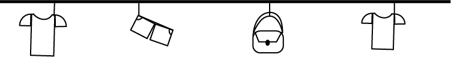
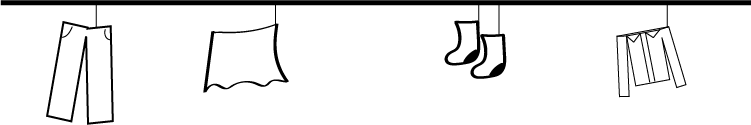

Maar waarom tweedehandsekleding?
Stel je voor dat elke keer dat je iets nieuws koopt, je de planeet een beetje zwaarder maakt.
Drie redenenen waarom tweedehandsekleding een slimme manier is om de aarde te helpen.
Goed voor de planeet: Nieuwe kleding maken kost heel veel water, energie en veroorzaakt veel vervuiling.
Maar door de oude kleren opnieuw te dragen, bespaar je al die grondstoffen en help je mee om de aarde schoon te houden
Goedkoper: Het winkelpersoneel bepaalt de prijs van de kleding. Dit kan gebaseerd zijn op merk, kwaliteit,
mode en het type kledingstuk.
Goed voor het milieu: Klanten komen naar de winkel, kijken door de kleding en
kopen wat ze leuk vinden.


Het adres van de Kilo Store: Jodenbreestraat 158, 1011 NS Amsterdam.